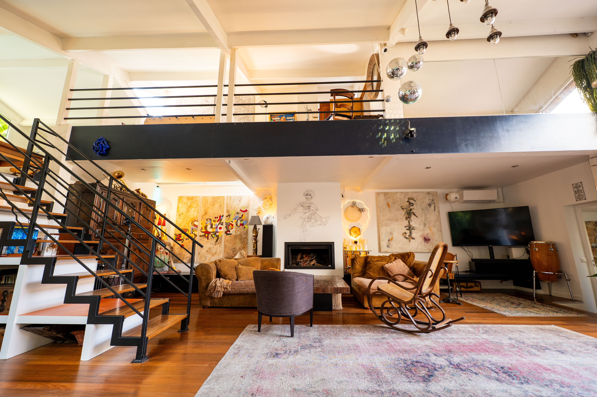

Retrouvez ici les réponses aux questions les plus fréquentes sur le lieu, les équipements et les conditions de réservation. Pour toute question spécifique à votre projet, contactez-nous directement.
Le loft accueille jusqu'à ~70 personnes en cocktail (debout), ~30 à 40 en configuration assise (dîner ou séminaire) et jusqu'à ~50 pour une demi-journée. L'annexe La Jolie Maison (~70 m²) peut être ajoutée en option pour des groupes plus importants ou des espaces distincts.
Le loft principal mesure environ 300 m². L'annexe ajoute 70 m² supplémentaires. Le jardin et la cour arborée (terrain clos) sont inclus et disponibles pour vos événements en extérieur.
L'espace principal est de plain-pied et accessible sans marche. Certaines zones (mezzanine, jardin) comportent des niveaux différents. Précisez vos besoins dans votre demande — nous adaptons l'accueil au maximum.
18 rue Édouard Vaillant, 93170 Bagnolet — à 50 m de la Porte de Montreuil (Paris 20e). Métro ligne 9, stations Porte de Montreuil ou Robespierre, environ 5 min à pied. Le loft est aussi accessible en RER A (Vincennes) ou depuis Gallieni (ligne 3) en environ 15 min à pied.
Le loft ne dispose pas de parking privatif. Plusieurs parkings publics payants se trouvent à moins de 5 minutes à pied. Compte tenu de la proximité avec Paris et l'accès direct en métro (ligne 9), les transports en commun restent le moyen le plus pratique.
Les événements peuvent se dérouler de 8h à 1h du matin, 7 jours sur 7. Pour les soirées, le départ des invités est requis avant 1h.
Oui. La musique amplifiée (DJ, groupe, playlist) est autorisée jusqu'à minuit. Le loft est équipé d'un système sonore professionnel. Au-delà de minuit, seule la musique douce d'ambiance est possible. Précisez votre programme musical lors de la demande de devis.
Oui, les prestataires extérieurs (traiteur, DJ, photographe, fleuriste) sont les bienvenus sous réserve d'accord préalable. Nous proposons une sélection de partenaires traiteurs de qualité — mais vous restez libres de faire appel à vos propres contacts.
Oui. Le loft dispose d'une cuisine entièrement équipée (four, réfrigérateur, grand plan de travail, évier) accessible à vos traiteurs ou pour la préparation sur place. Elle est adaptée aux préparations professionnelles.
Le loft est équipé de : système sonore professionnel, vidéoprojecteur et écran 4K, micro HF (sur demande), Wi-Fi haut débit et éclairage modulable. Du mobilier complémentaire (tables, chaises, mobilier lounge) peut être loué en option. Pour les tournages et productions, un accès anticipé et une assistance logistique peuvent être organisés.
Absolument — nous vous encourageons même à venir voir le lieu. L'atmosphère du loft se ressent en visite bien plus qu'en photos. Contactez-nous à contact@agnesbouche.com pour convenir d'un rendez-vous.
Remplissez le formulaire de contact ou écrivez-nous à contact@agnesbouche.com. Précisez : date souhaitée, type d'événement, nombre estimé de personnes et besoins spécifiques. Nous répondons sous 48 heures avec une proposition personnalisée et gratuite.
Les conditions d'annulation sont détaillées dans le contrat de location établi lors de la réservation. Nous faisons preuve de flexibilité face aux imprévus — contactez-nous dès que possible si votre situation change.
Nous répondons sous 48h à toutes les demandes, qu'il s'agisse d'une question ou d'un projet concret.
Demander un devis gratuit